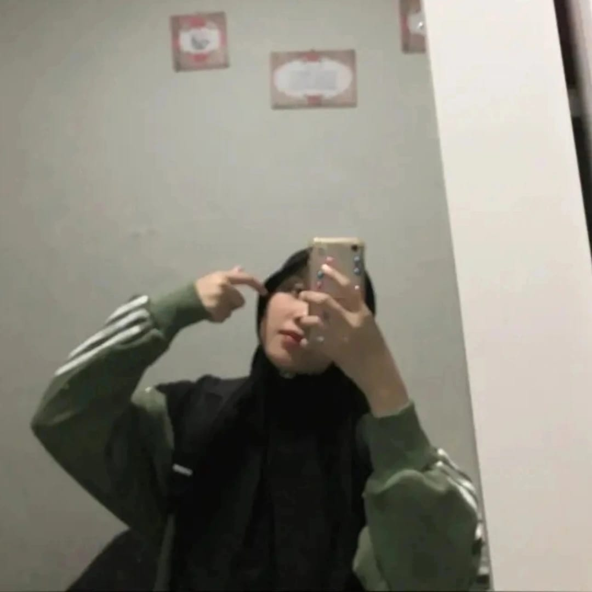

Tentang Saya

Halo! Saya Veny Adelia
Saya adalah seorang mahasiswa Teknik Informatika yang berasal dari Batam. Saya memiliki ketertarikan besar pada dunia teknologi, khususnya di bidang web development dan desain antarmuka.
Di waktu luang, saya senang belajar hal-hal baru, menulis blog, serta mengembangkan keterampilan saya dalam coding dan desain. Saya percaya bahwa konsistensi dan semangat belajar adalah kunci utama untuk berkembang.
saya percaya bahwa teknologi bisa menjadi alat untuk menciptakan solusi yang bermanfaat bagi banyak orang, dan saya ingin menjadi bagian dari perubahan itu